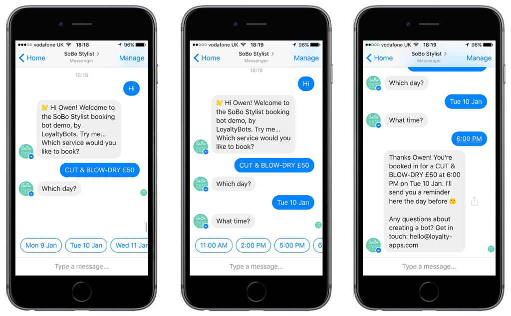
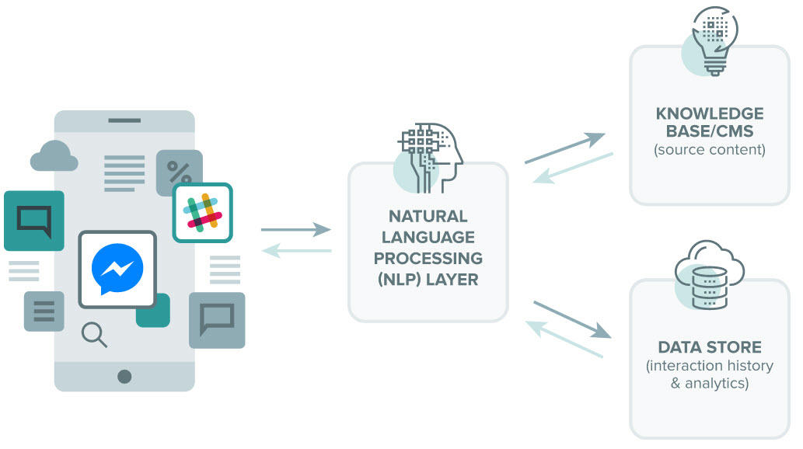

“Conversational agents” - are software applications that mimic written or spoken human speech for the purposes of simulating a conversation or interaction with a real person. There are two primary ways chatbots are offered to visitors: via web-based applications or standalone apps. Today, chatbots are used most commonly in the customer service space, assuming roles traditionally performed by living, breathing human beings such as Tier-1 support operatives and customer satisfaction reps.
Conversational agents are becoming much more common partly due to the fact that barriers to entry in creating chatbots (i.e. sophisticated programming knowledge and other highly specialized technical skills) are becoming increasingly unnecessary.
Today, you can make your very own chatbot that you can use in Facebook Messenger, for example – all without a pricey Computer Science degree or even much prior coding experience – and there are several sites that offer the ability to create rudimentary chatbots using simple drag-and-drop interfaces.
At the heart of chatbot technology lies natural language processing or NLP, the same technology that forms the basis of the voice recognition systems used by virtual assistants such as Google Now, Apple’s Siri, and Microsoft’s Cortana.
Chatbots process the text presented to them by the user (a process known as “parsing”), before responding according to a complex series of algorithms that interprets and identifies what the user said, infers what they mean and/or want, and determine a series of appropriate responses based on this information.
You can also dowload this article in pdf